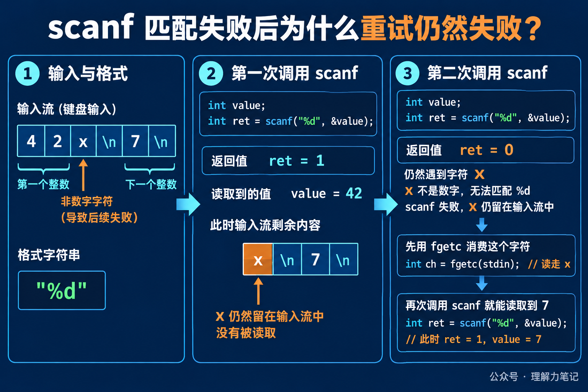

用户输入 42x，程序用 scanf("%d", &value) 读取整数。第一次调用能拿到 42，接着读取就失败了。很多代码会在失败后直接再调用一次 scanf，结果程序像卡住了一样，还是失败。
原因不在于 scanf 没有继续工作，而在于那个 x 还留在输入流里。%d 不接受它，匹配失败会返回 0，并把冲突字符留在流中。下一次调用面对的仍然是同一个 x，自然会得到同样的结果。
先记住一句话：
scanf返回 0 是匹配失败，不是“什么也没发生”。失败字符通常仍在流中，重试之前必须先消费它，或者放弃这次 token，改为按行读取再解析。
这篇文章的实验运行在 macOS 14.8.8、Apple clang 16.0.0，未在 Linux 主机实测。scanf 是 ISO C 标准接口；示例用 fscanf 读取临时流，行为与从 stdin 调用 scanf 的匹配规则相同。
这篇文章怎么读？先看 42x\n7\n 如何让第二次 %d 返回 0，再看失败字符怎样被消费，最后区分匹配失败和真正的 EOF。
scanf 家族的返回值是成功匹配并完成赋值的项目数。读入一个整数成功，返回 1；第一个转换就遇到不符合格式的字符，返回 0；在第一次转换前就遇到 EOF，返回 EOF，也就是一个负值。
这三个结果不能混为一谈。返回 0 说明输入还在，但它不符合当前格式；返回 EOF 说明没有可用输入，或者读流时发生了输入错误。若返回 EOF，还要结合 feof 和 ferror 判断是文件结束还是读取错误。
把输入流想成传送带，%d 是只接收数字的分拣口。传送带送来 42 时，分拣口取走它；下一个物品是 x 时，分拣口拒收，但物品仍停在入口。再次启动同一个分拣口，看到的还是 x。这个类比只说明“冲突字符没有自动消失”，实际程序仍要根据返回值决定如何恢复。

下面的程序把 42x\n7\n 写进临时流，然后连续执行两次 %d。第二次失败后，用 fgetc 消费掉冲突字符，再进行第三次转换。
输出如下：
第一次转换成功，value 得到 42。第二次返回 0，value 仍然是 42，因为这次转换没有完成赋值；x 也没有被 %d 消费。程序随后用 fgetc 取走 x，第三次转换遇到换行后跳过空白，成功读到 7。
这里的 fgetc 不是 scanf 的自动修复机制，而是调用者根据已知输入格式做的恢复动作。如果冲突内容可能是一整段字符串，只取走一个字符就不够，程序还要继续消费到换行，或者直接丢弃当前行。
最小的判断框架是先保存返回值，再决定下一步：
这段代码里，rc == 0 分支不能留空。对于交互式输入，更稳妥的做法通常是先用 fgets 读完整行，再用 strtol、strtod 等函数解析，这样一次失败只影响当前行，不会让未消费的字符反复触发同一个转换。
格式串里的空白也容易造成误解。"%d %d" 中的空格会跳过任意数量的空白，但不会跳过 x 这样的非空白冲突字符；它解决不了匹配失败后的输入恢复。
scanf 适合格式非常稳定、输入来源可信的场景。面对用户随时可能输入字母、空行或多余字符的情况，按行读取再解析，通常更容易给出明确的错误提示，也更容易控制一次失败消耗多少输入。
本文为公众号「理解力笔记」原创。转载请联系作者，并保留出处。